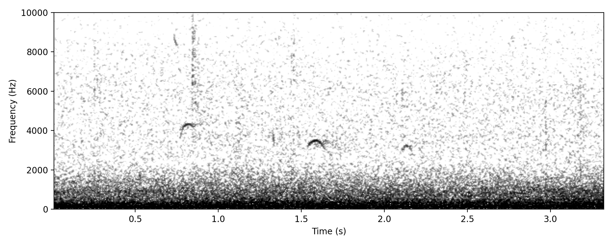
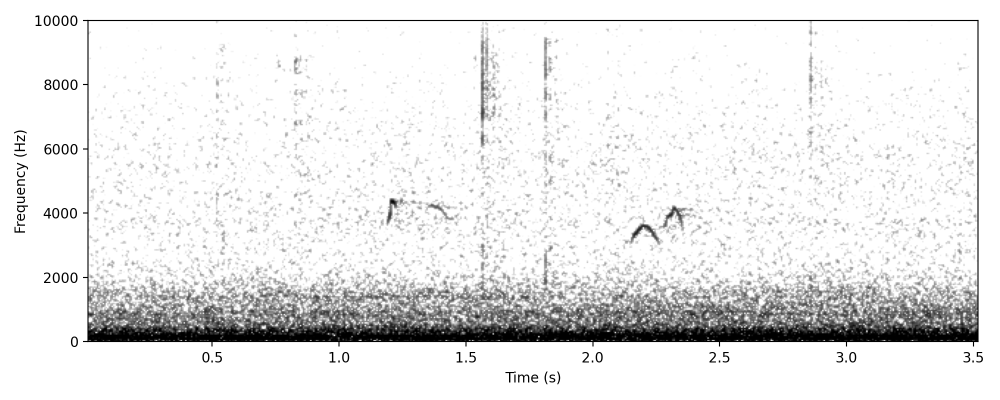
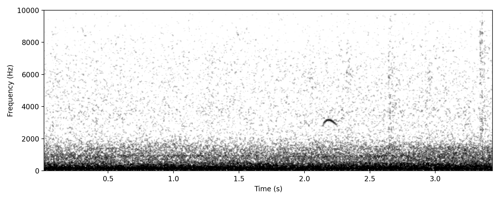

Zosterops lateralis
Upside-down U shape, the classic contact call of Silvereyes when they are moving in a flock - heard in daytime as well as by night.
Definitely Silvereye, need to investigate classification as LINEAR CALL (of HANZAB) and check how to eliminate the possibility of VARIABLE CALL or some other NFC-specific vocalisation. Needs further research not for species identity, but for call type assignment.
High confidence since this is a well-known vocalisation.
Care needed in assigning this call, since there are so few cues at night it is possible that some other species could make a similar vocalisation.
Project detections: 184 annotations; 11 nights; recorded in March, April; most recent detection 05 Apr 2026.


